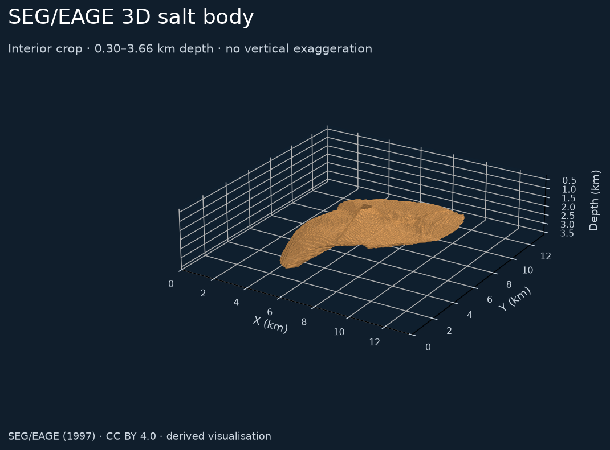
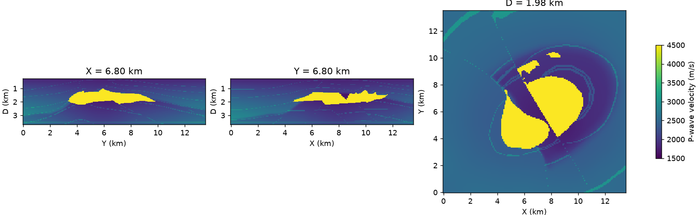

Find the overhang.
Choose “From below”, then rotate. A surface seen from one direction can conceal a much more complex underside.
Geophysics / An existing 3D benchmark
A complicated shape, a known model, and an incomplete view. Explore the SEG/EAGE salt body to see why recovering a 3D world takes more than a convincing surface.
SEG/EAGE 3D Salt Model (1997). This preview uses the recoverable interior of a published derivative: 0.30–3.66 km depth, across the model’s X/Y sample extent of 13.50 × 13.50 km. Source and transformations ↓

Drag to rotate · scroll or pinch to zoom · arrow keys to rotate when the view is focused. Use the view buttons for preset angles.
Choose “From below”, then rotate. A surface seen from one direction can conceal a much more complex underside.
Lower the surface opacity and move the Y section. The colours are model velocities, not measured seismic amplitudes or a confidence score.
Compare parallel and crossing survey lines. Different positions offer different potential constraints; showing which helps requires a wave-propagation experiment.
The SEG/EAGE model is a designed synthetic benchmark. Here we display its prescribed geometry. It gives us a reference against which a future reconstruction could be checked.
Salt’s velocity contrast bends and reflects seismic waves. Its complex boundaries make imaging the region beneath it difficult.
Image-based spatial reconstruction also has to infer geometry from limited observations. For a generated 3D world, the useful question is: which parts are supported by evidence?
The physics differs: optical occlusion and seismic wave propagation are not interchangeable. This viewer illustrates the question; it does not test World Labs or measure reconstruction quality.
Central sections through the same reduced volume, available even if the interactive viewer cannot run. D denotes depth. The horizontal and vertical distances use the same physical scale.

The original SEG archive was unavailable when this preview was prepared. We used the EMsig derivative, verified against its published SHA-256. In its unchanged interior, the published conversion is reversible: ρ = (v / 1700)3.88. We reversed that conversion to recover velocities. We excluded the overwritten shallow water and deep basement, retaining original depth samples 15–183: 0.30–3.66 km. This is not the complete original volume.
Exact dimensions, processing and checksums (JSON) · Asset provenance · Data licence and attribution
Credit: SEG/EAGE 3-D Modeling committee; F. Aminzadeh, J. Brac and T. Kunz, SEG/EAGE 3-D Salt and Overthrust Models (1997). Copyright 1997 Society of Exploration Geophysicists. Model: CC BY 4.0. Published derivative and conversion: Dieter Werthmüller / EMsig. This project made the crop, recovered velocities, reduced the volume and generated the mesh and figures. No endorsement is implied.